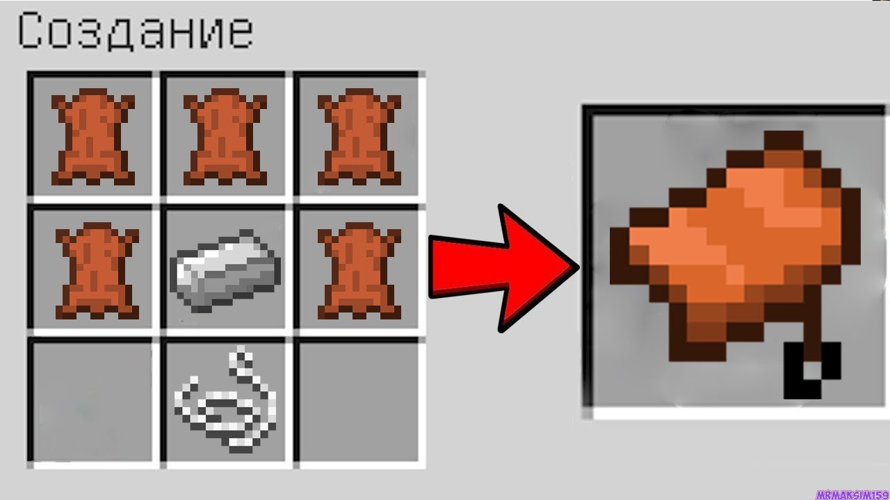
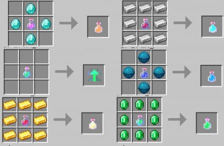

На сколько хорошо ты шаришь за Майнкраф?
Вопрос 1 (ооооооооочень лёгкий)
Сколько алмазов нужно для алмазной кирки?
А чего сразу такой сложный вопрос?
Ну два конечно
Три естественно
Однозначно один
Вопрос 2
Какой крафт у седла?
Эээээ, так оно не крафтится
Пять кожи и три железа
Четыре кожи и три железа
Три кожи, одно железо и поводок

Вопрос 3
Как появляются фантомы?
Они появляются из специального спавнера в пещерах
Они могут появится ночью если игрок не спал 4 или более ночей
Они появляются в аду в биоме голубой лес
Они появляются в сосновом биоме днём
Вопрос 4
Что нужно житилям, чтобы они начили учить биологию за 8 класс?
Учебник по биологии
Морковка или картошка
Двухместная кровать
Хорошее настроение
Вопрос 5
Как варится зелье невидимости?
Пузырёк воды, нарост незера, золотая морковь, редстоун
Пузырёк воды, нарост незера, светопыль, сверкающий арбуз
Пузырёк воды, нарост незера, золотая морковь, маринованый паучий глаз
Из креатива взять? разве нет?

Вернуться на Главную страницу